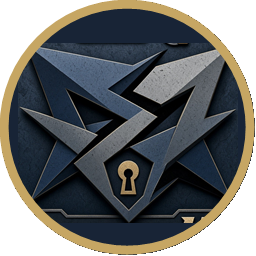
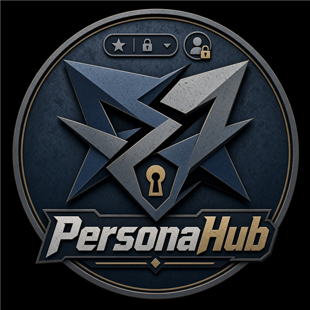

主密碼用來加密你的登入資料,忘記就無法復原,只能重設並重新登入各服務。
原型功能。會在入口頁裡移除這兩個服務禁止被嵌入的防護標頭,只限入口頁所在的分頁。不能顯示或沒登入時,請關掉這個選項。
快捷鍵 Alt+Shift+L 可隨時鎖定(可在 chrome://extensions/shortcuts 修改)。
貼到 PowerShell 執行,會在桌面建立 PersonaHub 捷徑(PersonaHub 圖示,直接開啟解鎖畫面)。在捷徑上按右鍵可釘選到工作列。

PersonaHub登入資料以主密碼加密,只存在這台電腦。